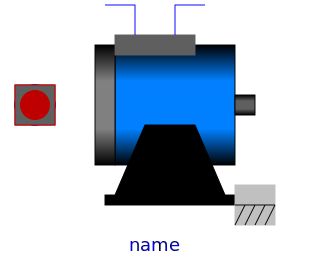

.
Modelica
.
Electrical
.
Machines
.
BasicMachines
.
AsynchronousInductionMachines
Information
This package contains models of asynchronous induction machines, based on space phasor theory:
AIM_SquirrelCage: asynchronous induction machine with squirrel cage
AIM_SlipRing: asynchronous induction machine with wound rotor
These models use package SpacePhasors.
Contents
Name
Description

AIM_SquirrelCage
Asynchronous induction machine with squirrel cage rotor
AIM_SlipRing
Asynchronous induction machine with slipring rotor
Revisions
Main Authors:
Anton Haumer
Technical Consulting & Electrical Engineering
D-93049 Regensburg
Germany
email:
a.haumer@haumer.at
Copyright:
Copyright © 1998-2018, Modelica Association and Anton Haumer.
The Modelica package is
free
software; it can be redistributed and/or modified under the terms of the
Modelica license
, see the license conditions and the accompanying
disclaimer
in the documentation of package Modelica in file "Modelica/package.mo".
v1.02 2004/09/19 Anton Haumer
v1.03 2004/09/24 Anton Haumer
consistent naming of inductors and resistors in machine models
v1.1 2004/10/01 Anton Haumer
changed naming and structure
issued to Modelica Standard Library 2.1
v1.2 2004/10/27 Anton Haumer
fixed a bug with support (formerly bearing)
v1.3.2 2004/11/10 Anton Haumer
ReluctanceRotor moved to SynchronousMachines
v1.4 2004/11/11 Anton Haumer
removed mechanical flange support
to ease the implementation of a 3D-frame in a future release
v1.6.3 2005/11/25 Anton Haumer
easier parameterization of SlipRing model
v2.2.0 2011/02/10 Anton Haumer
conditional ThermalPort for all machines
Generated at 2018-10-20T17:02:17Z by
OpenModelica 1.13.0~dev-1491-g87333c1